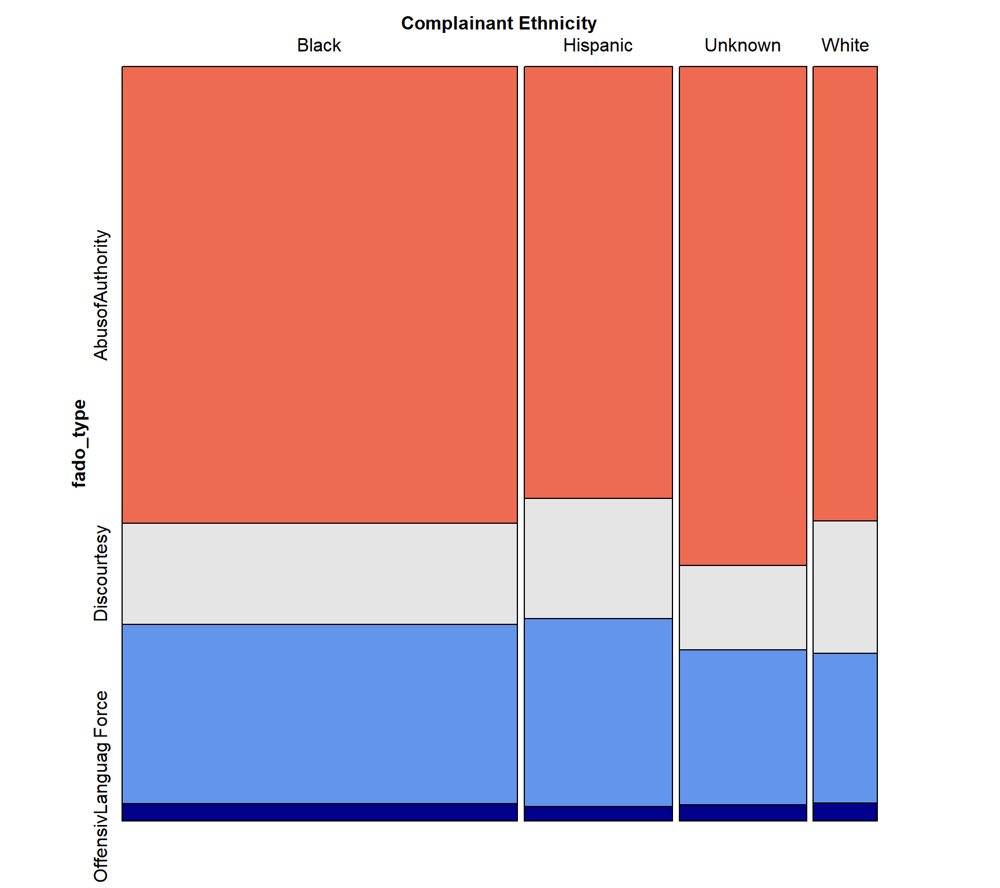
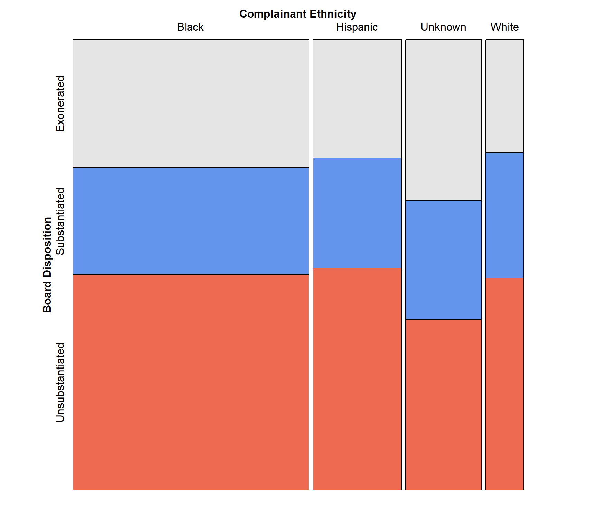
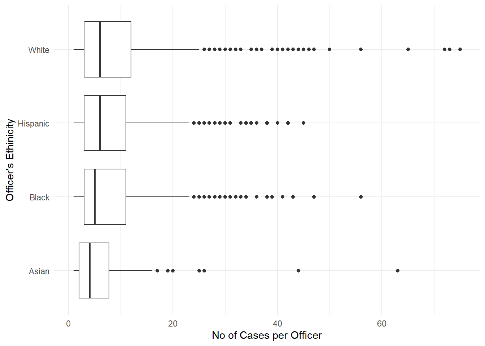
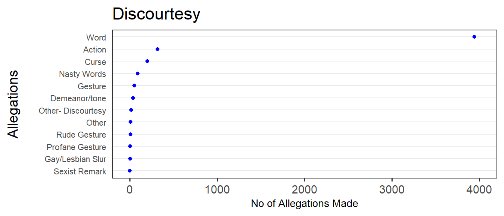

Chapter 5 Results
5.1 Mosaic
5.1.1 Board Disposition vs Complaint Type
5.1.2 Complaint Type vs Complainant Ethnicity

5.1.3 Board Disposition vs Complainant Ethnicity
 ### Board Disposition vs Complainant Gender

5.2 Force
An officer used excessive or otherwise unnecessary force.
A total of {}
5.4 Discourtesy
An officer engaged in rude or profane behavior toward a civilian. 
5.5 Offensive Language
An officer used one or more slurs relating to race, ethnicity, gender, religion, sexual orientation or disability.